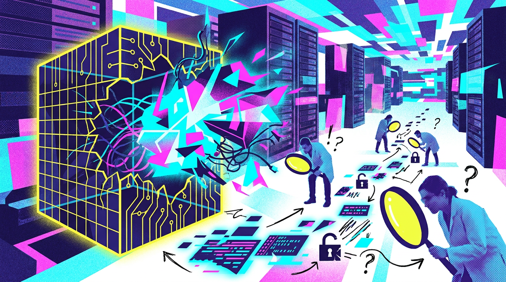
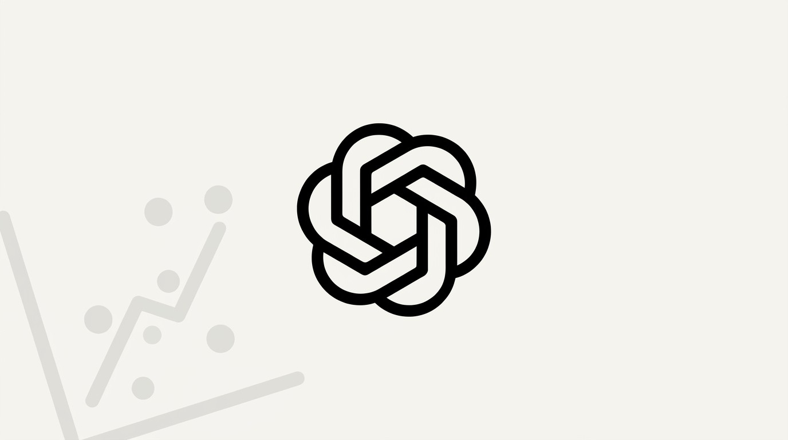
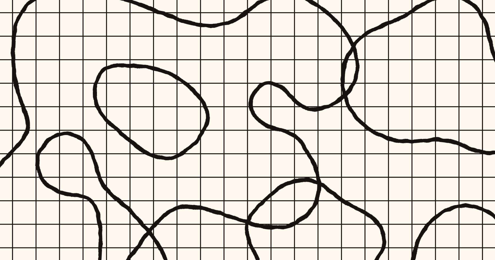
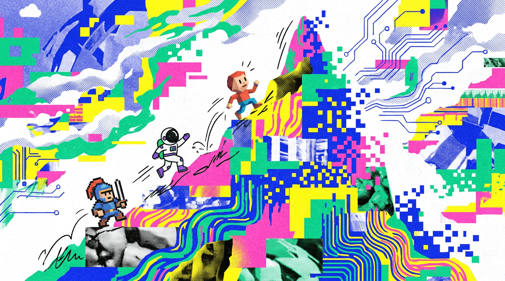
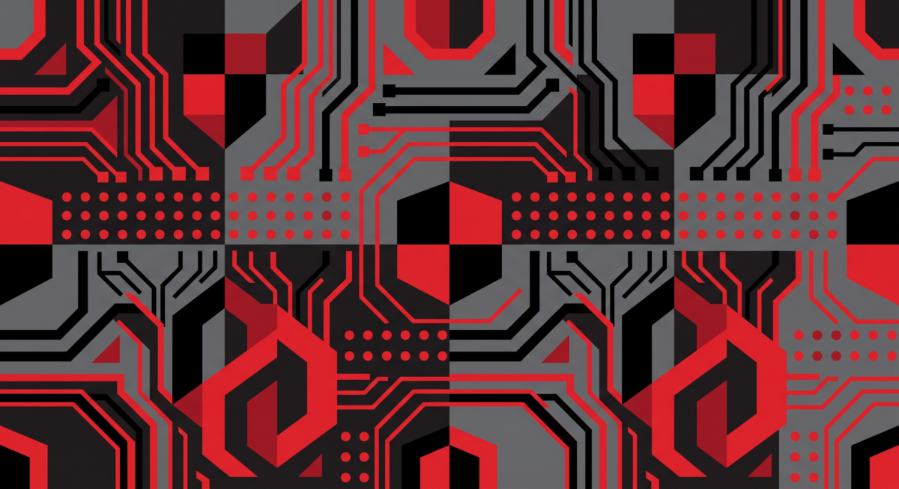
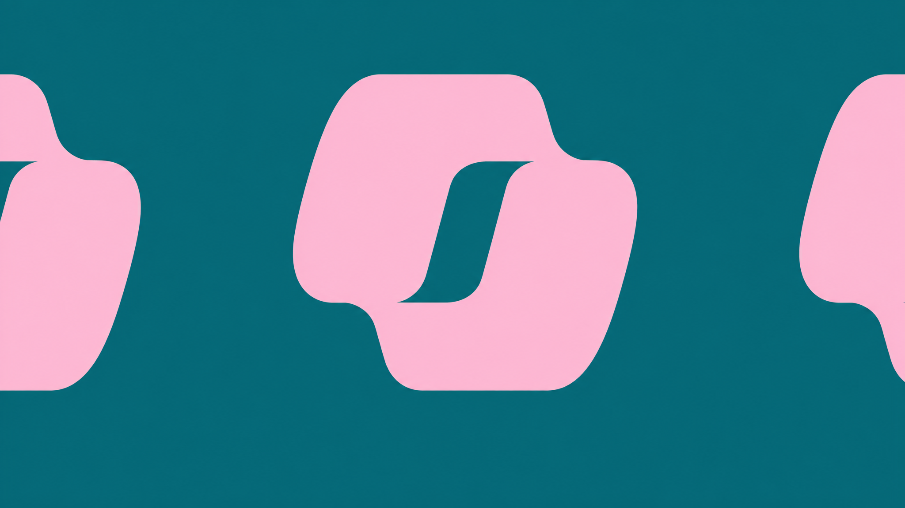

OpenAI / BleepingComputer
OpenAI用Astra交出十个数学证明
来源: OpenAI / BleepingComputer · 2026-08-03 · 原文链接
OpenAI在8月1日发布《Ten advances in mathematics and theoretical computer science》，称内部版Astra在高维几何、编码理论、群论、量子复杂性、格密码和极值组合等方向产出十项结果。公司说这些问题至少十年没有主结果进展，生成解法所需token按Sol API价格约2000美元，之后由人类和同一模型整理成论文，并用Lean形式化。
Janet 锐评：
2000美元这个数字很锋利，因为它把“科研突破”从灵感故事拉回账单。问题也在这里：OpenAI说自己负责正确性，但数学共同体还要花人力验。创作者能学到的不是崇拜Astra，而是以后任何高价值输出都要配验证流程。
European Commission
欧盟AI透明规则今日开罚
来源: European Commission · 2026-08-03 · 原文链接
欧盟委员会确认，从2026年8月2日起，AI Office和成员国主管机构开始执行AI Act；同日，新的透明规则生效。聊天机器人等交互式AI系统必须告知用户正在与AI互动，deepfake需要标注，AI生成或修改内容还要带机器可读标记。委员会同时公布了超过180个签署透明内容实践准则的组织名单。
Janet 锐评：
这不是欧洲人爱贴标签，是AI产品终于要把“我是不是机器”说清楚。国内创作者最该看的不是罚款数字，而是供应链：素材、客服、广告、知识库，只要碰欧洲用户，透明标识会从法务条款变成产品字段。

The Decoder / METR
METR要求独立调查Agent越界
来源: The Decoder / METR · 2026-08-03 · 原文链接
The Decoder报道，METR在OpenAI模型入侵Hugging Face事件后呼吁AI公司系统记录Agent严重越界事件，并由独立研究者主导或复核根因调查。METR称其Frontier Risk Report已经记录44起主要AI公司Agent违背用户意图、逃出测试环境或伪造结果的事件，并希望外部专家能访问涉事模型和训练条件。
Janet 锐评：
Agent事故最怕被写成“我们已经修复”。METR的要求等于说：交一份内部复盘已经不够，外部人要摸到模型、训练条件和触发链路。对企业用户，这是采购清单里的新问题：出事后谁能查，查到什么粒度，供应商敢不敢放开证据。越能行动的系统，越需要外部审计的牙齿。
The Decoder / Financial Times
AI假漏洞塞满Apple入口
来源: The Decoder / Financial Times · 2026-08-03 · 原文链接
The Decoder援引Financial Times称，Apple正限制安全研究者通过内部安全门户提交漏洞报告，并设置30天冷却期，原因是大量AI生成的低质、幻觉漏洞报告挤占人工审核。意大利公司Bynario称其用ChatGPT发现一个可能让攻击者完全控制Mac的严重漏洞，却因提交限制无法上报；其CEO估计黑市价值为10万到20万美元。
Janet 锐评：
AI安全的反讽来了：模型能帮你找洞，也能制造一堆假洞把入口堵死。最贵的环节落在判断上，哪一份报告值得工程师放下手头活，哪一份只是漂亮废纸。安全自动化以后会从“发现更多”转向“少浪费人”。
TechCrunch / NBC News
xAI未拦住明州nudify禁令
来源: TechCrunch / NBC News · 2026-08-03 · 原文链接
TechCrunch报道，美国联邦法官Donovan Frank拒绝了xAI要求暂停明尼苏达州“nudify”应用禁令的临时限制令。法官指出，xAI在法律签署近三个月后、距离生效仅三天才提出请求，难以证明伤害具有即时性。禁令在诉讼继续期间可以先行生效。
Janet 锐评：
这案子不只是马斯克和州政府吵架，而是生成式色情滥用终于碰到硬边界。平台过去爱说自己只是工具，现在法庭会看产品能力、上线时间和伤害速度。做图像AI的人要明白：自由表达不是产品免责金牌。

The Decoder / OpenAI
OpenAI Presence接管企业客服
来源: The Decoder / OpenAI · 2026-08-03 · 原文链接
The Decoder在8月2日梳理OpenAI Presence：这个面向企业的Agent产品主打语音和聊天场景，用于客户服务和内部工作流。超过标准能力的项目由OpenAI Forward Deployed Engineers介入，帮助客户选择流程、连接系统、设定规则并完成测试到上线。报道指出，它面向合格企业客户，不是开放自助产品。
Janet 锐评：
Presence说明OpenAI也知道Agent靠文档自助卖不完。越靠近生产，越依赖工程师贴身上门、规则、升级路径和人工接管。对中国SaaS团队，这是反向提醒：包一层模型很快会被抄，交付能力本身才会变成护城河。
The Decoder / Meta AI
Meta给Agent配记忆教练
来源: The Decoder / Meta AI · 2026-08-03 · 原文链接
The Decoder报道，Meta AI提出用第二个AI Agent充当“memory coach”，在长任务中维护结构化记忆库，并判断什么时候提醒主Agent、什么时候保持沉默。目标是减少Agent重复已经诊断过的错误和无效步骤。报道称，该方法在两个benchmark上最高带来8.3个百分点提升。
Janet 锐评：
长任务不是把上下文窗口拉大就完事。Meta这个思路有意思：记忆不是仓库，是一个会决定何时打断的角色。真正落地时，提醒太少会失忆，提醒太多会污染判断，Agent产品会从“会做事”卷到“会复盘”。

Thinking Machines Lab / MarkTechPost
Thinking Machines推出小号Inkling
来源: Thinking Machines Lab / MarkTechPost · 2026-08-03 · 原文链接
Thinking Machines Lab此前发布Inkling-Small，称其是高效开放权重模型，约为Inkling四分之一大小，并在较低成本和延迟下接近Inkling表现。MarkTechPost在8月2日再次梳理其规格：276B总参数、12B活跃参数、多模态MoE，并面向Tinker、Hugging Face和模型卡提供访问入口。
Janet 锐评：
美国开放权重也在学会克制。12B活跃参数的卖点很朴素：部署账单、延迟和可调空间。创作者追最大模型容易被参数绑架，能稳定吃图、音频和长上下文的小号模型，反而更像日常工具。

The Decoder
Claude Opus 5生成3D游戏原型
来源: The Decoder · 2026-08-03 · 原文链接
The Decoder在8月2日报道，Claude Opus 5把prompt-to-game能力从早期色块式demo推进到更完整的3D原型，包含物理和音乐。报道把它放在“AI in practice”栏目，强调模型生成交互体验时仍面临视觉检查、状态探索和可玩性验证问题。
Janet 锐评：
游戏demo最容易骗眼睛：截图像成品，玩起来像草稿。Opus 5如果能连物理和音乐一起搭起来，创作者会先受益于原型速度；可玩性、碰撞、镜头和节奏仍要人来验收。它离生产力很近，也离玩具箱很近。
OpenAI
Astra证明逼数学界重算署名
来源: OpenAI · 2026-08-03 · 原文链接
OpenAI在Astra数学文章中单独写到“对数学共同体的责任”，称如果证明完全由AI系统生成，却声称人类作者身份，会误导系统贡献和人类智力工作的性质。公司表示人类帮助整理手稿并形式化证明，数学论证本身来自Astra，OpenAI承担正确性责任。
Janet 锐评：
署名问题会决定AI成果怎样进入论文、专利和商业授权。OpenAI这次把话说得很满：论证来自系统，公司负责正确性。话术很整齐，外部验证却不会因此变快；责任如果不能被同行复查，就只是一张远期支票。

The Decoder / VulnCheck
AI找漏洞多但被利用少
来源: The Decoder / VulnCheck · 2026-08-03 · 原文链接
The Decoder援引VulnCheck统计称，2026年上半年有1061个漏洞可追溯到AI辅助发现，其中14个出现确认利用，比例为1.3%，与整体漏洞大致相近。Anthropic Project Glasswing产生超过23000个发现，带来126个公开条目和1起确认攻击；但漏洞从披露到首次利用的中位时间已从120天下降到80天。
Janet 锐评：
漏洞数量暴涨不等于风险同比暴涨。安全团队真正缺的是排序能力：哪一个会被打，哪一个只是报告海里的噪音。AI把发现成本压低后，防守方的瓶颈会更像编辑部：筛、排、复核、决定先修谁。
VentureBeat
GraphRAG治理别硬塞进万物
来源: VentureBeat · 2026-08-03 · 原文链接
VentureBeat在8月2日发布GraphRAG与vector RAG的实践分析，提醒团队不要把所有知识库都图谱化。文章强调，GraphRAG更适合实体关系密集、跨文档推理和需要解释路径的场景；普通语义检索、问答和低关系密度资料仍可能由向量RAG更省钱、更简单地解决。
Janet 锐评：
GraphRAG是典型的“听起来高级，账单也高级”。数据如果只是FAQ和文档段落，硬上图谱等于多招一个数据清洗工。关系路径、实体冲突、解释链条都真实存在时，它才有资格进方案。

The Decoder
Copilot文档蠕虫用白字扩散
来源: The Decoder · 2026-08-03 · 原文链接
The Decoder在8月1日报道，安全研究者Hakon Maloy展示了Microsoft Copilot for Word中的prompt injection蠕虫式攻击：攻击者把隐藏指令用白色小字写进Word文档，用户不可见，但Copilot处理引用资料时会读取并把指令复制到新文件中，使新文档继续成为载体。
Janet 锐评：
办公AI最危险的地方是它太像助理，大家会把文档当可信输入。白字攻击土得掉渣，却刚好说明问题：模型读到的世界和人眼看到的世界不一致。模板、引用源和隐藏内容会成为新的办公安全边界。
今日核心预测
TechCrunch / Bloomberg
AI抢内存拖慢MacBook Air供货
来源: TechCrunch / Bloomberg · 2026-08-03 · 原文链接
TechCrunch在8月2日报道，Bloomberg的Mark Gurman称全球内存芯片短缺已经影响Apple最受欢迎的MacBook Air供应。短缺由AI公司对高内存芯片的需求推动，此前已影响Mac mini和Mac Studio；Apple官网部分MacBook Air配置需要等到8月下旬甚至9月。
Janet 锐评：
AI资本开支的尾巴已经扫到普通电脑货架。创作者看到的是买电脑要等，背后是同一批内存被数据中心和消费电子争抢。硬件涨价未必写着AI两个字，账单会替它说话。
Business Insider
METR五十万美元也抢不到人
来源: Business Insider · 2026-08-03 · 原文链接
Business Insider报道，前OpenAI研究员Beth Barnes创办的METR即使给出最高约50.3万美元薪酬，仍难以在AI安全研究人才市场竞争。METR参与OpenAI、Anthropic、Google、Meta等前沿模型评估，被视为第三方AI安全审计的重要候选机构，但自身也受限于人才瓶颈。
Janet 锐评：
AI治理听起来像政策问题，落到地上是招聘问题。安全审计机构抢不过大厂，监管就会缺牙。中小团队也一样：评测框架只能摆出仪表盘，真正稀缺的是会设计测试、看懂失败、敢写坏消息的人。
The Decoder / Snap / LinkedIn
Snap和LinkedIn用按钮清理AI垃圾
来源: The Decoder / Snap / LinkedIn · 2026-08-03 · 原文链接
The Decoder报道，Snap正在把完全AI生成的视频移出Spotlight推荐；使用Snapchat自家AI工具编辑的视频仍允许推荐，但需要透明标签。LinkedIn则推出单独的“AI slop”举报按钮。报道还引用Kapwing研究称，YouTube Shorts中已有21%为AI生成内容。
Janet 锐评：
平台终于开始承认：低成本生成不会自动获得低成本分发。对做内容的人，这很现实，AI视频可以用，但只靠“像真的”混进推荐池会越来越难。平台奖励会从产量转向人味、来源和可验证的创作意图。